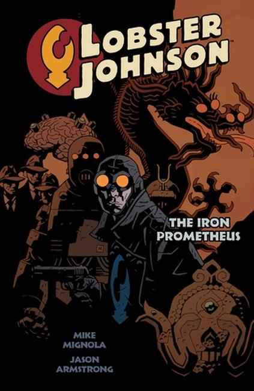

The Iron Prometheus

As America hovers on the brink of World War II, the Lobster and his allies must race against the clock as they fight their way through cannibals, yetis, and the machinations of a mysterious villain bent on fulfilling a deadly prophecy. After years of captivating fans from the pages of Hellboy and B.P.R.D., the pulp-style adventures of Lobster Johnson take the limelight in the Lobster's first solo series. Written and with covers by Hellboy creator Mike Mignola, and drawn by Jason Armstrong (Ferro City, The Sensational Spider-Man), Lobster Johnson: The Iron Prometheus is a wild ride full of fearsome monsters, mad scientists, and threats from the world beyond.